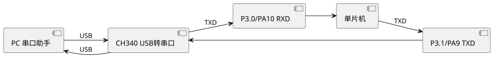

实验6 串口通信（与PC收发）
串口通信 (Serial Communication) 是单片机与 PC 之间最常用的通信方式。本实验使用 STC89C52RC 的串口方式 1 与 STM32F407 的 USART1，实现波特率 115200 的全双工通信：PC 发送字符，单片机回显并统计收发字节数。掌握 UART (Universal Asynchronous Receiver/Transmitter) 配置与波特率计算。完整工程源码见 /code/stc89c52rc/06-uart/ 与 /code/stm32f407/06-hal-uart/。
一、实验目的
- 掌握 UART 异步串行通信的帧格式 (起始位、数据位、校验位、停止位)。
- 掌握 STC89C52RC 串口方式 1 的配置与波特率计算。
- 掌握 STM32F407 USART1 的 HAL 库配置。
- 能实现单片机与 PC 的全双工收发，使用串口助手调试。
二、知识点
- UART 帧格式：1 位起始位 (低) + 8 位数据位 + 1 位停止位 (高)，无校验。波特率 (Baud Rate) 即每秒传输的位数。
- STC 串口方式 1：8 位 UART，可变波特率。SCON 寄存器 SM0=0, SM1=1。波特率由 T1 方式 2 (8 位自动重装) 产生。
- STC 波特率公式：$\text{Baud} = \dfrac{2^{SMOD}}{32} \times \dfrac{f_{osc}}{12 \times (256 - TH1)}$。其中 SMOD 为 PCON.7 倍频位。11.0592 MHz 下 115200 波特率：$TH1 = 256 - \dfrac{2^1}{32} \times \dfrac{11059200}{12 \times 115200} = 256 - 4 = 252 = 0xFC$ (SMOD=1)。
- 晶振选择：11.0592 MHz 能整除产生标准波特率 (9600/19200/115200)，误差为 0；12 MHz 下 9600 波特率有 8.5% 误差，易通信失败。
- STM32 USART：挂载于 APB2 (84 MHz)，波特率寄存器 BRR = $f_{PCLK} / \text{Baud}$，硬件自动分频，精度高。
- 中断收发：RI (接收中断)、TI (发送中断) 标志，中断服务函数中清标志并处理数据。STM32 使用 HAL_UART_RxCpltCallback 回调。
三、硬件清单
| 序号 | 器材 | 规格 | 数量 | 备注 |
|---|---|---|---|---|
| 1 | STC89C52RC 板 | USB 转串口 CH340 | 1 | — |
| 2 | STM32F407 板 | 板载 USB 转串口 | 1 | — |
| 3 | USB 线 | — | 1 | 连接 PC |
| 4 | PC | 串口助手软件 | 1 | 如 SSCOM/XCOM |
四、电路连接
STC89C52RC 板载 USB 转串口芯片 (CH340)，单片机 P3.0 (RXD)、P3.1 (TXD) 经 CH340 连接 PC USB。STM32F407 的 USART1 (PA9=TX, PA10=RX) 同样经板载 CH340 连 PC。无需额外连线，插 USB 即可。

查看 PlantUML 源码
@startuml
skinparam defaultFontName "Microsoft YaHei"
skinparam backgroundColor #ffffff
left to right direction
component "PC 串口助手" as PC
component "CH340 USB转串口" as CH1
component "P3.0/PA10 RXD" as RXD1
component "单片机" as MCU1
component "P3.1/PA9 TXD" as TXD1
PC --> CH1 : USB
CH1 --> RXD1 : TXD
RXD1 --> MCU1
MCU1 --> TXD1 : TXD
TXD1 --> CH1
CH1 --> PC : USB
@enduml五、代码框架
5.1 STC89C52RC 串口方式 1 收发回显
工程 /code/stc89c52rc/06-uart/main.c。波特率 115200，8N1，SMOD=1。
#include <reg52.h>
volatile unsigned char rx_byte;
volatile bit rx_flag = 0; /* 接收完成标志 */
unsigned int rx_cnt = 0, tx_cnt = 0;
/* 串口中断号 4 */
void UART_ISR(void) interrupt 4 {
if (RI) { /* 接收中断 */
RI = 0; /* 清接收标志 */
rx_byte = SBUF; /* 读取数据 */
rx_flag = 1; /* 置接收标志 */
rx_cnt++;
}
if (TI) { /* 发送中断 */
TI = 0; /* 清发送标志 */
/* 发送完成处理 */
}
}
void UART_Init(void) {
SCON = 0x50; /* 方式1, 8位UART, 允许接收 (REN=1) */
PCON |= 0x80; /* SMOD=1 波特率倍频 */
TMOD &= 0x0F; /* 清 T1 模式位 */
TMOD |= 0x20; /* T1 方式2: 8位自动重装 */
TH1 = 0xFC; /* 115200 @11.0592MHz SMOD=1 */
TL1 = 0xFC;
TR1 = 1; /* 启动 T1 */
ES = 1; /* 使能串口中断 */
EA = 1; /* 开总中断 */
}
/* 发送一个字节 (查询方式) */
void UART_SendByte(unsigned char dat) {
SBUF = dat;
while (!TI) ; /* 等待发送完成 */
TI = 0;
tx_cnt++;
}
/* 发送字符串 */
void UART_SendString(char *str) {
while (*str) {
UART_SendByte(*str++);
}
}
void main(void) {
UART_Init();
UART_SendString("UART Ready 115200\r\n");
while (1) {
if (rx_flag) {
rx_flag = 0;
UART_SendByte(rx_byte); /* 回显收到的字符 */
if (rx_byte == '\r') { /* 回车换行处理 */
UART_SendByte('\n');
}
}
}
}5.2 STM32F407 HAL USART1 中断收发
工程 /code/stm32f407/06-hal-uart/main.c。
#include "stm32f4xx_hal.h"
UART_HandleTypeDef huart1;
uint8_t rx_byte;
volatile uint32_t rx_cnt = 0, tx_cnt = 0;
void USART1_IRQHandler(void) {
HAL_UART_IRQHandler(&huart1);
}
/* 接收完成回调 */
void HAL_UART_RxCpltCallback(UART_HandleTypeDef *huart) {
if (huart->Instance == USART1) {
rx_cnt++;
HAL_UART_Transmit(&huart1, &rx_byte, 1, 10); /* 回显 */
HAL_UART_Receive_IT(&huart1, &rx_byte, 1); /* 继续接收 */
}
}
void USART1_Init(void) {
__HAL_RCC_USART1_CLK_ENABLE();
__HAL_RCC_GPIOA_CLK_ENABLE();
/* PA9 TX, PA10 RX 复用配置略 */
huart1.Instance = USART1;
huart1.Init.BaudRate = 115200;
huart1.Init.WordLength = UART_WORDLENGTH_8B;
huart1.Init.StopBits = UART_STOPBITS_1;
huart1.Init.Parity = UART_PARITY_NONE;
huart1.Init.Mode = UART_MODE_TX_RX;
huart1.Init.HwFlowCtl = UART_HWCONTROL_NONE;
HAL_UART_Init(&huart1);
HAL_NVIC_SetPriority(USART1_IRQn, 1, 0);
HAL_NVIC_EnableIRQ(USART1_IRQn);
HAL_UART_Receive_IT(&huart1, &rx_byte, 1); /* 开启中断接收 */
}
int main(void) {
HAL_Init();
USART1_Init();
HAL_UART_Transmit(&huart1, (uint8_t*)"Ready\r\n", 7, 100);
while (1) { }
}六、调试要点
- 波特率匹配：PC 串口助手必须设为与单片机一致的 115200，8N1，无校验，否则乱码。
- COM 口选择：设备管理器查看 CH340 枚举的 COM 号，串口助手选对应 COM。
- 晶振核对：STC 波特率依赖晶振，11.0592 MHz 必须与实际板子一致，否则通信失败。
- SMOD 倍频：115200 高波特率需 SMOD=1 (PCON |= 0x80)，否则 TH1 装不下值。
- 中断清标志：RI/TI 必须软件清零 (写 0)，否则反复进中断。
- 发送等待：查询方式发送要等 TI 置位再发下一字节；中断方式更高效。
- USB 转串口驱动：CH340 需安装驱动，Windows 11 一般自带。
七、思考题
- UART 异步通信为什么需要双方波特率一致？波特率误差超过多少会导致通信失败？
- 为什么 11.0592 MHz 晶振比 12 MHz 更适合串口通信？分别计算 9600 波特率下的 TH1 与误差。
- SMOD 倍频位的作用是什么？什么情况下需要开启 SMOD？
- 查询发送与中断发送各有何优缺点？什么场景应该用中断或 DMA？
- 如何实现单片机之间的多机通信 (一主多从)？简述地址帧与数据帧的区分方法。